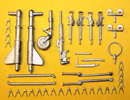

{kind=link}
{kind=link}
{kind=link}
{kind=link}
{kind=link}
{kind=link}
{kind=link}


Kit #30
MSRP $79.95
Images and text Copyright © 2006 by Matt Swan
Developmental Background
Mitsubishi began the development of this aircraft in 1933 with the Ka-9, a twin engine, twin finned fast bomber. There was no particular military specification issued for the aircraft other than for range and performance. Initial trials were good enough to generate some level of excitement within the Japanese Navy and more specific requirements were issued for a fully developed attack bomber. This resulted in the Ka-15 which incorporated two Hiro type 91 liquid cooled V engines driving four blade propellers. After a few developmental refinements and the introduction of the Kinsei 3 14 cylinder radial engine combined with a metal three blade Hamilton Standard propeller the type went into production in 1936 as the G3M1.
Only about 34 of the G3M1 versions were manufactured before the engines were replaced with the more powerful Kinsei 41 and 42 radial engines (G3M2) which were rated for 1075hp each. Production was running all out on these aircraft and Nakajima was recruited to assist with production. Throughout the production life of the aircraft there were additional engine upgrades and fuel capacity increases (G3M3) along with various armament packages including retractable dorsal turrets and transport versions.
The type earned a degree of noteworthiness on 14 August 1937 when a formation of Nell bombers initiated the first transoceanic attack traveling 1250 miles to China, bombing targets and then returning to base at Taipei in Formosa. By time the United States entered the war the type was already obsolete but obtained one last historical note when in 1941 a formation of G3M3s attacked and sunk the battleship HMS "Prince of Wales" and battle cruiser "Repulse" with torpedoes. By 1943 they were being replaced in service by the G4M 'Betty' and remaining aircraft were being employed in second-line duties. Approximately 1048 G3M aircraft were built with 636 coming from Mitsubishi and 412 from Nakajima.
The Kit
This is a multi-media vacuformed kit that arrives in a sturdy plain white cardboard box. Inside we have two large and one small heavy white polystyrene sheet of vacuformed parts along with a single small sheet of Vivac clear parts. Two long resin ailerons are loose in the box. Additional resin detail parts manufactured by Copper State are contained in a zip-lock bag and a collection of white metal pieces are sealed in a small poly bag.
The vacuformed pieces are all very nice with good crisp consistent engraved panel lines. There are a few vacuforming dimples from the vac table that will need to be shaved off but nothing serious. These sheets cover not only the primary exterior parts but also include two sturdy wing spars, interior floor panels, interior bulkheads and engine cowlings. Cockpit sidewalls are also covered with the vacuformed pieces and show a great level of detail however due to the small size of detail many hard corners of various boxes have been softened by the vacuforming process. Some of the more complex interior pieces as well as the engine oil coolers suffer from very thin plastic and are easily crushed - care must be taken while handling these pieces and some reinforcement may be needed during construction. I only saw about four pieces that were like this and is something I've seen happen before with these complex vac pieces. When the primary pieces are removed from the master sheets and cleaned up they mate together very well with panel lines mating up and no unequal sized parts.
The clear parts are made from Vivex which is a Copolyester material. The clear parts are nice and sturdy with good clarity and well defined frame lines. These are not like any conventional vacuformed canopies you may have dealt with before, much sturdier and easy to work with. In addition to all the gun blisters and canopy part this sheet contains the lower station for one of the dorsal positions and this part suffered from thin material like the engine oil coolers did. The resin pieces are from Copper State and are also very nice. There are a few air bubbles and a fair amount of fine flash but for the most part are very acceptable. They include engine faces, weighted tires, aileron hinges, propeller pieces, interior detail pieces and the twin rudders. Clean-up will be not be a difficult procedure here at all. The long resin cast ailerons display nice surface detail and give a good impression of fabric covered parts.
Lastly we have a small bag of white metal pieces which include sturdy main landing gear struts and well detailed retraction arms. The rudder pedals and all machine guns are included here. The machine guns are nice little pieces with good fine details. The bag also contains a bunch of little metal valve actuators for use on the engine faces which will add a whole new level of detail to the model.
Taking an inventory of all parts we have twenty eight vacuformed pieces, seven clear Vivac pieces, fifty nine resin pieces and forty four white metal pieces for a total parts count of one hundred thirty eight. Two white metal pieces are not shown as the first production run of this kit got shorted parts M-12 and M-15, a window crank for the overhead consol and the ammo can for the 20mm cannon. These can easily be scratch built or you can contact Koster Aero Enterprises
for replacement parts.

You may click on the small images above to view larger pictures.
I have outlined the white vac parts with a black magic marker to make them easier to see.
Decals and Instructions
Instructions consist of two photocopied A-4 sized pages with slightly fuzzy text. They include some basic tips for working with vacuformed pieces and several exploded views of the model. Some basic colors are listed and with some careful study you can get this baby put together. The last page is a full color scan of three aircraft profiles showing decal placement and exterior color patterns. As with all Koster kits there is not historical data or color charts.
The kit decals, printed by Micro Scale, are somewhat brief with basic Hino Marus and code numbers for three aircraft. They do not include any of the white or yellow strips like you would find with Tamiya or Hasegawa kits, the modeler must make his marking decisions early in the build and paint these aspects on the model. The decals show good color density but on the Hino Marus it looks like the print registry might be off just a little, I have not taken a spanner to them to verify this and it could be just an optical illusion but you will want to take a good hard look at these if you are a real nit picker about your models. There are no warning stencil or service markings on the decal sheet but then the Japanese were never real big on these markings anyway. Previous experience with Micro Scale printed decals indicates they will react well with all the basic setting solutions.
Conclusions
This is more than the conclusion to this review folks, this is the conclusion of full Bill Koster kits. This is most likely the last and best kit to be produced by William Koster before he steps into retirement. Bill has spent a lifetime providing us with fabulous models under his name and under more recognizable brand names such as Revell-Monogram and it seems that with each kit his work just gets better so it logically follows that this kits is simply outstanding. Vacuform parts are clean and well made with exceptionally crisp and consistent panel lines, interior detail is easily on par with any contemporary big name kit and for many actually surpasses them. Decals are adequate and instructions will get the job done.
If you are a fan of WW2 Japanese aircraft you will most definitely want to pick one of these up and if you are one of those modelers who have always been afraid to venture into the realm of vacuformed models you should seriously consider trying this kit or any of the Koster kits - it"ll open a new world of modeling for you. While best suited for accomplished modelers I give this kit a very good recommendation.